In this post, I will be going deeper on the sample used in my previous lab writeup. I will only cover some initial analysis and a look at the setup functionality of the loader/main server component. This post, like the previous one, is meant for practice and scratching a curiosity itch. The lab sample (Cerberus RAT 1.03.5 Beta 2009) surfaced around the same time that early Spy-Net RAT (2008-9) versions came out and heavily mirrors Spy-Net’s functionality. More well known RATs spawned from these early Spy-Net/Cerberus code bases(examples being CyberGate Excel ('Rebhip') and Xtreme RAT). A great article that goes into depth on these RAT’s evolution and history can be found here.
Initial Analysis
Helpful tools used for setting up analysis on Delphi binaries:
The samples used here are ones that I generated. Here are some of the panel options when generating an implant:
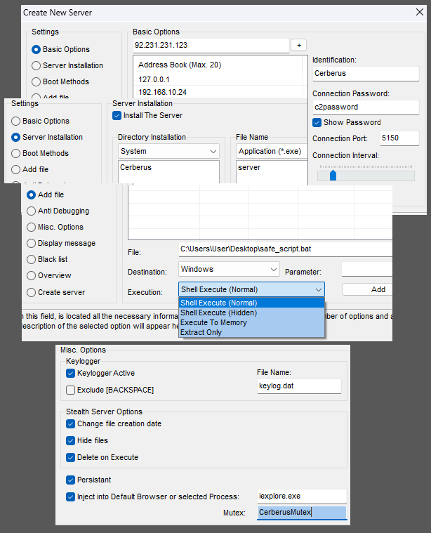
Using Binary Refinery to list resources, I found resources named CERBERUS and A02. These resources are loaded in using FindResourceA, LoadResource, LockResource, and SizeofResource API calls. Then passing the loaded resource through a single XOR decryption routine. Configuration data is then decrypted with the same routine and glued into the loaded resource.
Decryption and extraction of resources using Binref:
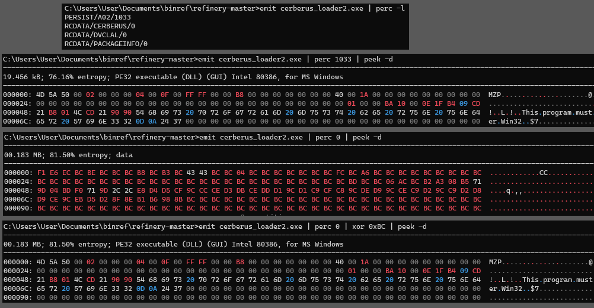
Decryption routine of the loaded resource:
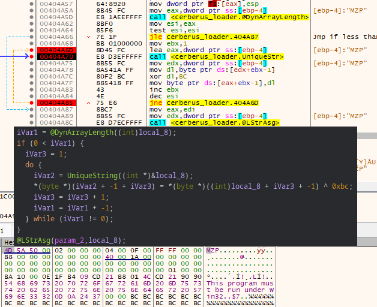
The extracted CERBERUS resource is revealed to be the main module/server component and a quick strings output over this DLL reveals config data, plugin module names, and some settings data in plain text.
Module names from strings output:
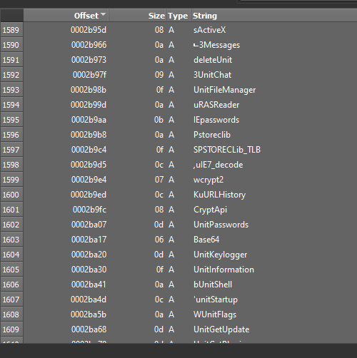
The other resource PERSIST/A02 is also a complete PE file and appears to be a dummy executable. The purpose of the dummy executable is for when the loader is unable to locate or startup Internet Explorer. If this happens it will open this dummy executable in a suspended state and inject the server into it.
The Loader
The loader starts by attempting to acquire the SeDebugPrivilege, which is a privilege that allows a process to obtain any process handle and bypass any security descriptor (except protected processes). This is done by opening the process token, then using AdjustTokenPrivileges to enable the SeDebugPrivilege. It will then attempt to query HKU\Cerberus\Software\ for a “StartPersist” value name and delete it if it exists (both the loader and persisted server will query values in the registry on start up for host environment data to see if running as a first execution or not).
The loader then runs a few anti-sandbox and anti-virtual environment functions. It starts by checking for VirtualPC (an old virtualization application for Windows hosts that was discontinued in 2011 in favor of Hyper-V) by setting up and exception handler, then executing illegal instructions that would, in a non-virtual environment, generate exceptions on the real CPU, but would be executed without exception in a VM (see UD instructions). It will check for VirtualBox by iterating processes using CreateToolHelp32Snapshot, searching for 'VBoxService.exe'. It will check for VMWare by using the backdoor communications channel (if running in VMWare a port named ‘VX’ will be available for communication). It will also run a very outdated sandbox checking function, checking for sandboxie/anubis/CWsandbox/Joesandbox/threatexpert, using common Windows versions and DLLs that were used by these sandboxes at the time.
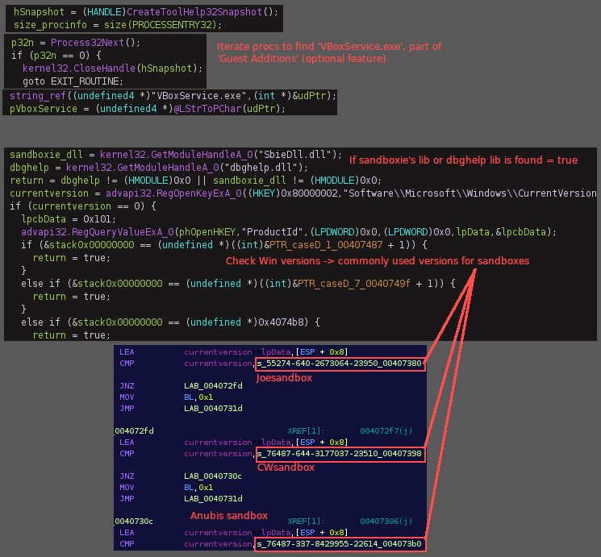
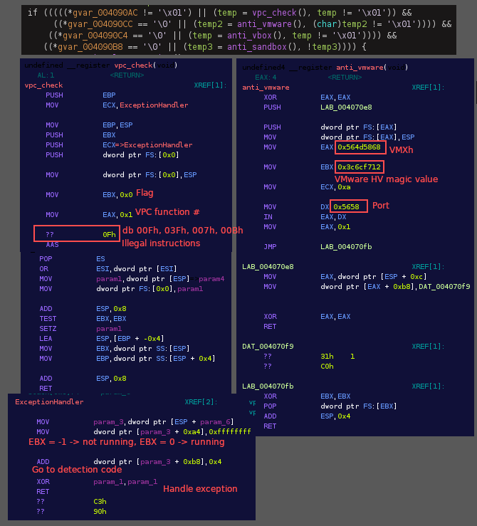
There is an option in the builder application that allows the attacker to enter a list of processes and services to be terminated when the loader is run. It will iterate through both of these lists of processes/services on the system and attempt to shut them down.
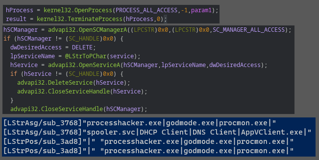
After opening either Internet Explorer or the A02 dummy executable in a suspended state and loading the ‘CERBERUS’ server DLL into an arbitrary location in memory, the loader will run it’s main injection routine using the BTMemoryModule for Delphi. The technique allows the loading of the DLL from memory without storing it on disk (sort of similar to reflective DLL injection). BTMemoryModule allows the DLL to be loaded as a TMemoryStream (stored in a dynamic memory buffer that is enhanced with file-like access capabilities) with BTMemoryLoadLibrary and BTMemoryGetProcAddress. This is a great tutorial that goes over this process in more detail.
Crappy PCode refactor of the injection routine in Ghidra:
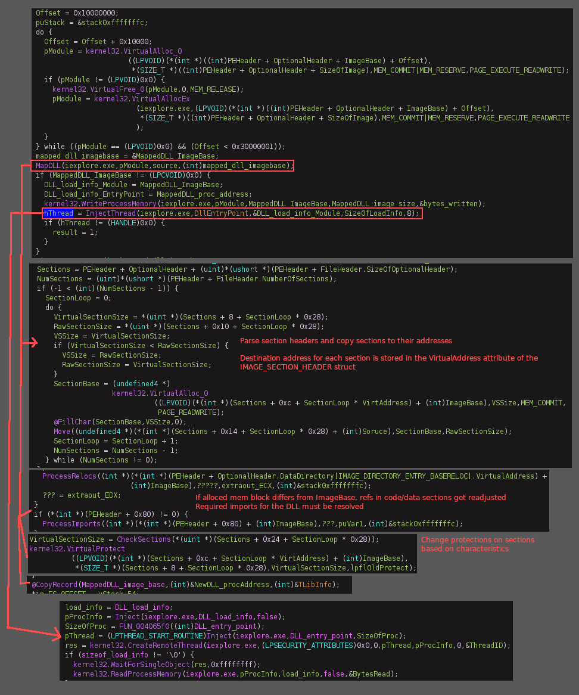
View of the loaded DLL and components in RWX memory pages:
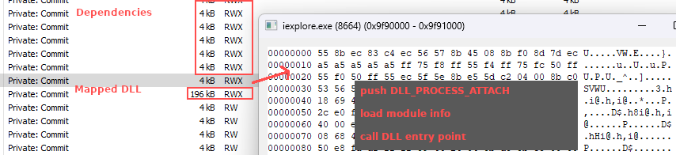
The Server
The server starts off by loading in a stub file to append settings/config data to. There is then a single XOR decryption routine followed by an encoding routine that run over the configuration/settings data before gluing it to the stub file.
Main string encryption routine found throughout the server:
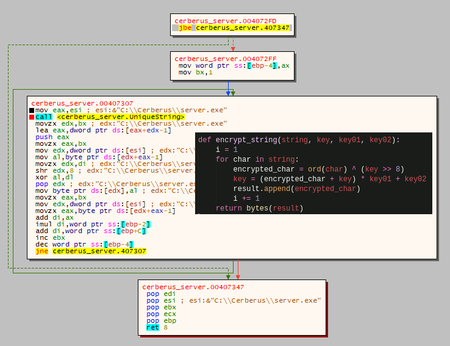
Although we can easily access the config data from the extracted DLL, I would like to point out a really fun way to do this dynamically using frida-trace, which is a really neat tool. I found out about this after reading a series of blog posts made by Adam(@Hexacorn). As an example, these Cerberus samples usually will call Delphi string assignment, position, and concatenation functions after the decryption/decoding routines. If hooks are placed to intercept the arguments of these functions, and combined with hooks on some Windows API functions, we can get a great look into what is happening inside the sample. It’s also worth mentioning another tool that I used here to run frida-trace over just the server DLL alone from startup: dll_to_exe.
Example output from @LStrAsg, @LStrPos, and @LStrCmp:
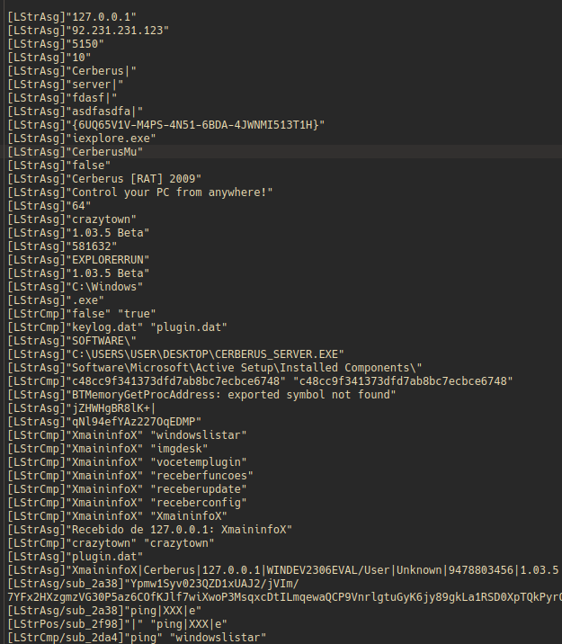
NOTE: Delphi 2006 and below use single byte ANSI characters, so all strings and chars are AnsiString and AnsiChar. Delphi 2009 introduced native unicode string support and mapped the generic string to UnicodeString
The server will query the HKU\Cerberus\Software registry location for “identification” and “configfile” value names, which I can not figure out why, neither of those values are mentioned anywhere else. If it finds that it is running from persist it will create a mutex (custom) with _PERSIST appended at the end, while setting itself up before connection. If the server is not running from 'persist' and was a first run execution, it will copy the loader to a new location in the file system, rename it, and delete the original. The new 'persist' location is custom selected in the builder, ex: C:\Windows\Update\iexploreupdate.exe (hidden with SetFileAttributesA() + sw_hide).
Information on persistence, setup, environment, paths etc., are encrypted with the same simple XOR cipher and encoding routine as mentioned before. Using RegSetValueExA the data is put in the HKU\Cerberus\Software location (as observed in the previous post). Looping through this encryption/encoding routine in the debugger reveals that environment, path, and configuration data are stored in this registry location.
HKLM\SOFTWARE\WOW6432Node\Microsoft\ActiveSetup\InstalledComponents*
- {6UQ65V1V-M4PS-4N51-6BDA-4JWNMI513T1H}\StubPath:”C:\Windows\DefinietlyInternetExplorer\IExplorerUpdate.exe Restart” (boot/logon persistence)
HKU\SID\Software\Cerberus*
- FirstExecution:”10/16/2023”
- FileName:”Dlzcs1bl2+45iWIfMnZbSdbHXj9Bn(..SNIP..)” (path and information related to the loader)
- HKLM:”JZGTLMqroNCIPiDadaltMA” (ASEP/runkey)
- HKCU:”JZGTLMqroNCIPiDadaltPA” (ASEP/runkey)
- StartPersist:”Dlzcs1bl2+45iWIfMnZbSdbHXj(..SNIP..)” (configuration data related to the server)
Connection to the C&C is done using winsock functions and uses the previously mentioned XOR encryption/encoding and decryption/decoding routine for sending and receving data. Once connected, a mutex (custom) is setup with _SAIR appended at the end. Pings are sent/recived every few seconds.
If the plugin is not compiled with the loader then there is option to automatically send it over on first sucessful connection, or to send it via URLDownloadToFileA, or directly from the attacker’s machine. The plugin is a DLL that contains the other half of the server’s functions and is stored as a .dat file on disk (hidden with with SetFileAttributesA() + sw_hide) in the same directory as the copied loader and keylog data file (if enabled). Functions from the module are loaded in memory using the BTMemoryModuleLoad and resloved with BTMemoryGetProcAddress.
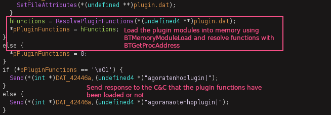
Options from the C2 panel once connection is established:
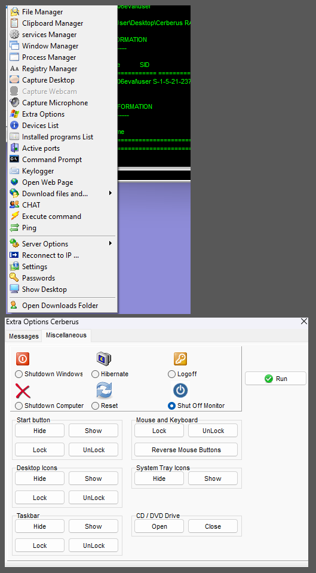
Conclusion
This is as much analysis as I want to do on this older sample as it’s not really relevant to anything current. Regardless, if anyone actually reads this (lol), and spots something I’ve gotten wrong, please send me a message on Discord!
Resources
https://www.reversinglabs.com/blog/spying-on-spynet
https://www.joachim-bauch.de/tutorials/loading-a-dll-from-memory/comment-page-1/
https://www.felixcloutier.com/x86/ud
https://github.com/malwares/Remote-Access-Trojan/tree/master/Spy-net.2.7.beta
https://www.hexacorn.com/blog/2022/01/28/delphi-api-monitoring-with-frida/
https://hshrzd.wordpress.com/2016/07/21/how-to-turn-a-dll-into-a-standalone-exe/
https://www.hexacorn.com/blog/2022/01/28/delphi-api-monitoring-with-frida/
https://frida.re/docs/frida-trace/
https://blag.nullteilerfrei.de/2019/12/23/reverse-engineering-delphi-binaries-in-ghidra-with-dhrake/
https://binref.github.io/
https://github.com/crypto2011/IDR
http://hmelnov.icc.ru/DCU/index.eng.html
https://github.com/huettenhain/dhrake